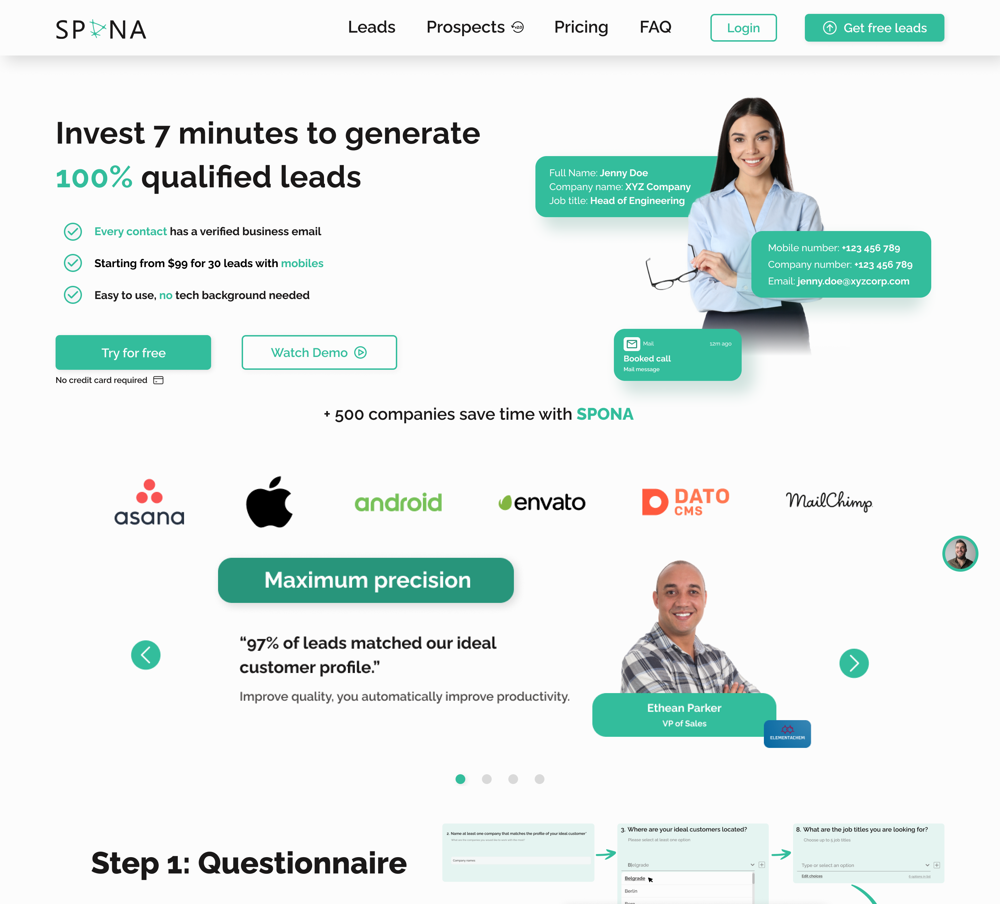
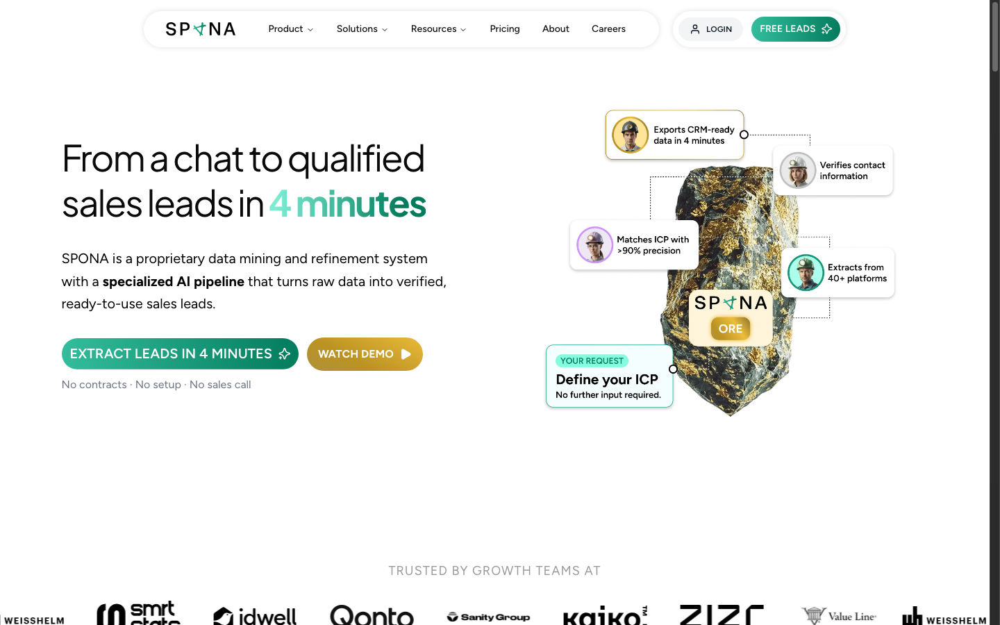
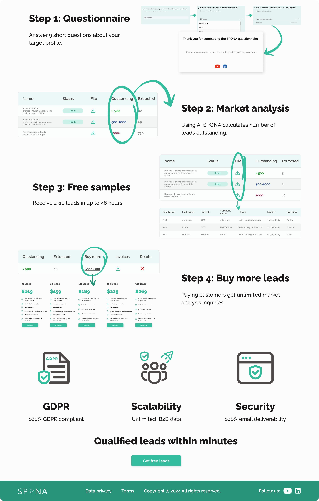
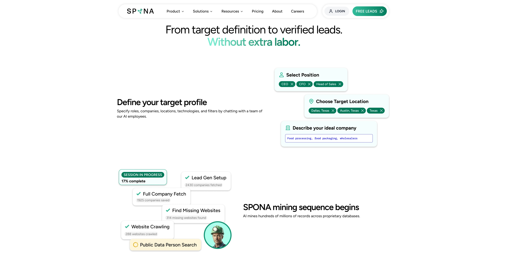
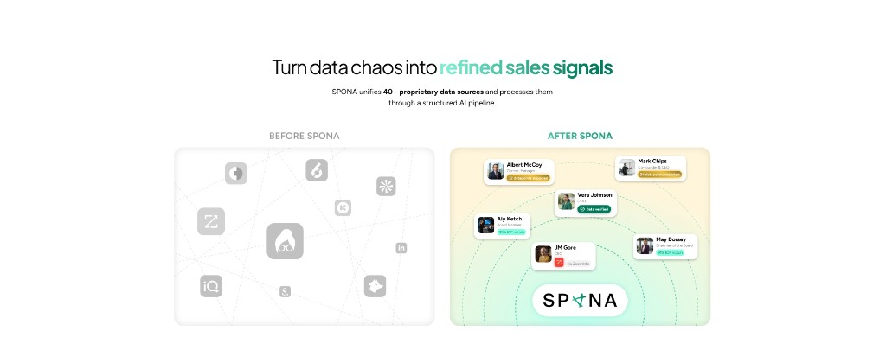
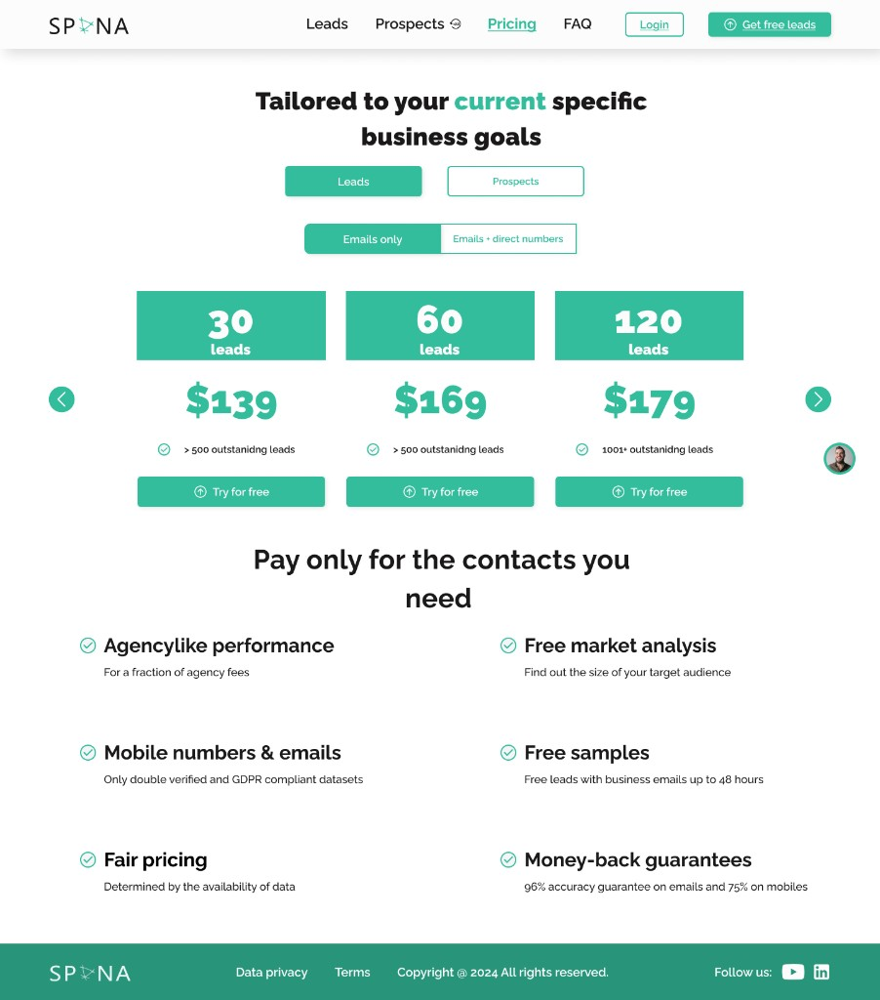
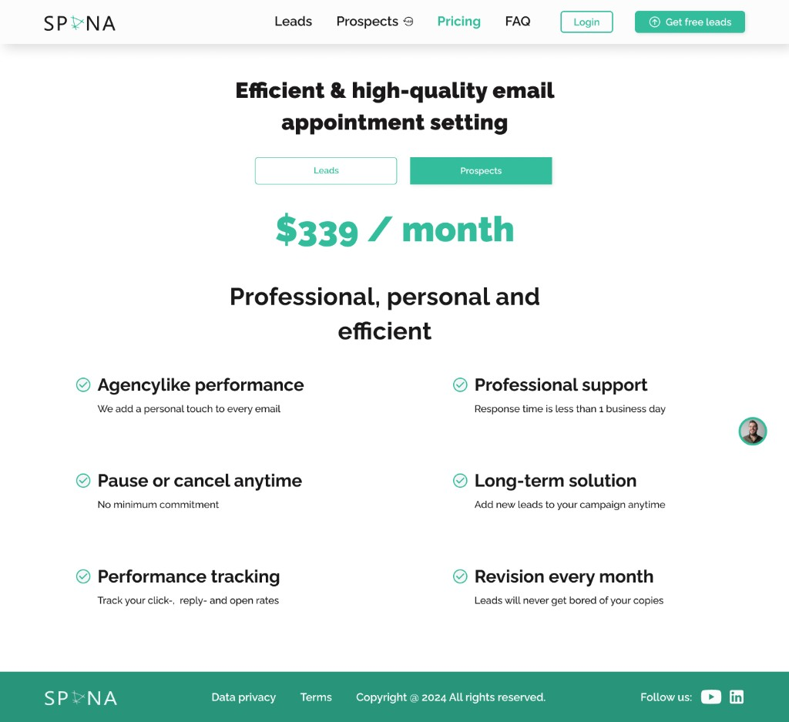
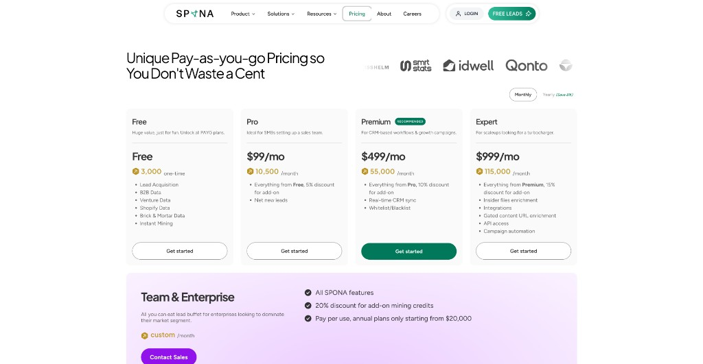
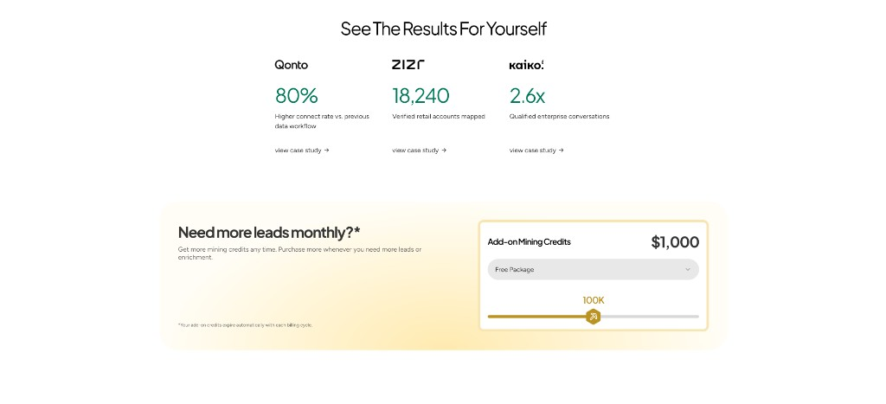

Website design for a B2B platform that generates verified sales leads.
Spona is a London-based B2B SaaS product — a proprietary data-mining and AI pipeline that turns raw market data into ready-to-use sales leads. This case study covers the core marketing site design: explaining a technical product in minutes, not meetings.
About this project. This is earlier portfolio work that still holds up today. The live site at sponasales.com has since received a light refresh — a few new sections, small content updates, and an adjusted colour palette — while keeping the same layout, UX, and conversion story shown here. Screenshots below compare the original site (before) with the redesign (after); they are not meant to show every pixel change on the current live version.

The problem
When this project started, Spona’s site didn’t communicate the product clearly — the hero felt generic, the AI pipeline story was hard to scan, and the path to “extract leads” wasn’t obvious enough for busy growth teams.
The redesign needed to do three jobs at once: explain a technical system in plain language, build trust with social proof, and drive sign-ups without forcing a sales call first. That foundation is still what runs on sponasales.com today.
Before → after
These side-by-sides show the shift from the previous marketing site to the redesigned version documented in this case study. The structure and UX direction stayed consistent on the live product; later updates were mostly colour tweaks, copy polish, and a few new blocks — not a full rebuild.




Approach
The page narrative mirrors the product: define a target profile → mine data → refine → verify → export leads. Each block answers one question a sales leader would ask before signing up.
- Outcome-led hero — lead with speed and clarity: qualified leads in four minutes, not another dashboard.
- Before / after story — show data chaos vs refined sales signals so the AI pipeline feels tangible.
- Modular product sections — Extractor, Refiner, Verifier, and Exporter as scannable steps.
- Frictionless CTAs — “No contracts · No setup · No sales call” at key conversion points.
- Questionnaire flow — clearer onboarding section so teams understand how targeting works before they register.
- Light refresh on live — since launch, the client has iterated on colours and small UI details without changing the core flow.
Product story
The before / after diagram turns an abstract AI pipeline into something visual — scattered tools and messy data on one side, verified contacts and ICP match scores on the other.

Pricing
Pricing moved from fixed lead bundles and appointment-setting tiers to a clearer pay-as-you-go model — credits, plan comparison, and enterprise upsell in one scannable grid. Layout and hierarchy from this design still guide the live pricing page.



Results & conversion
Social proof and upsell blocks designed to close the loop — client metrics up front, add-on credits when teams need more volume.

Outcomes
A B2B marketing site that turns a complex data product into a clear conversion story — designed in Figma, shipped at sponasales.com, and documented on Behance. The design has aged well; the live site today is essentially the same experience with a fresher palette and minor updates.
From generic SaaS hero to a sharp “chat → leads in 4 minutes” promise — still the site’s core message.
Questionnaire section redesigned for clarity and sign-up intent; structure unchanged on live.
Design published at sponasales.com; later refreshed with updated colours and small content additions.